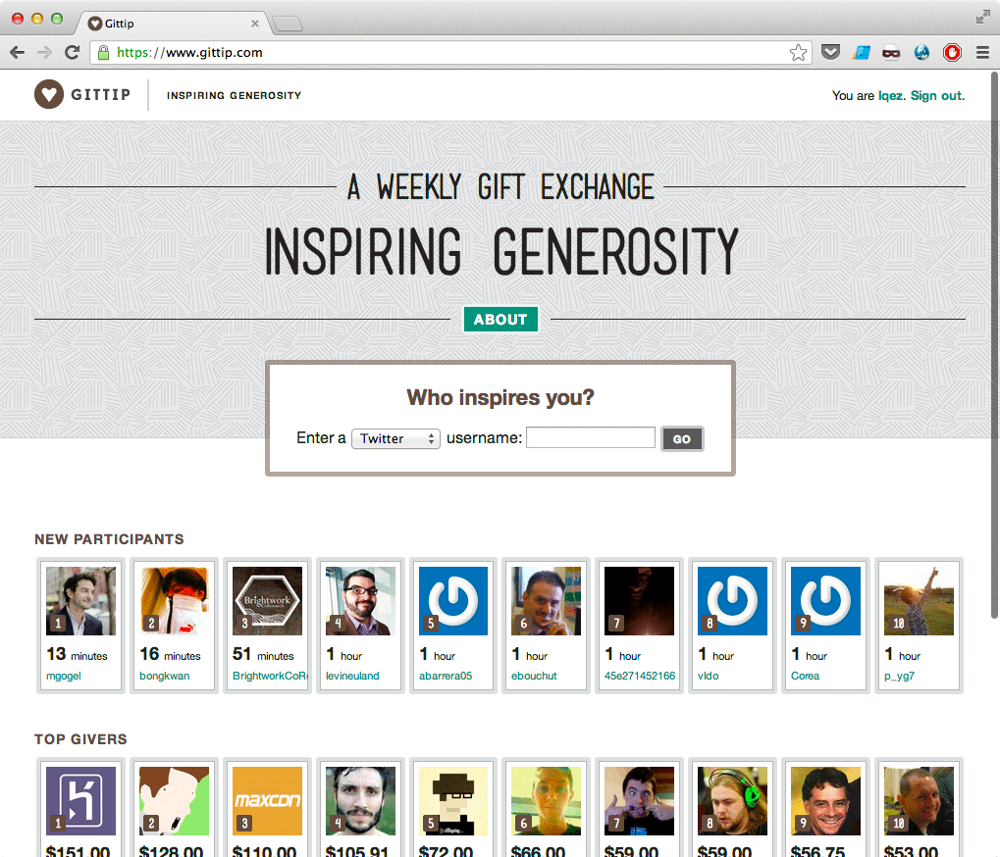
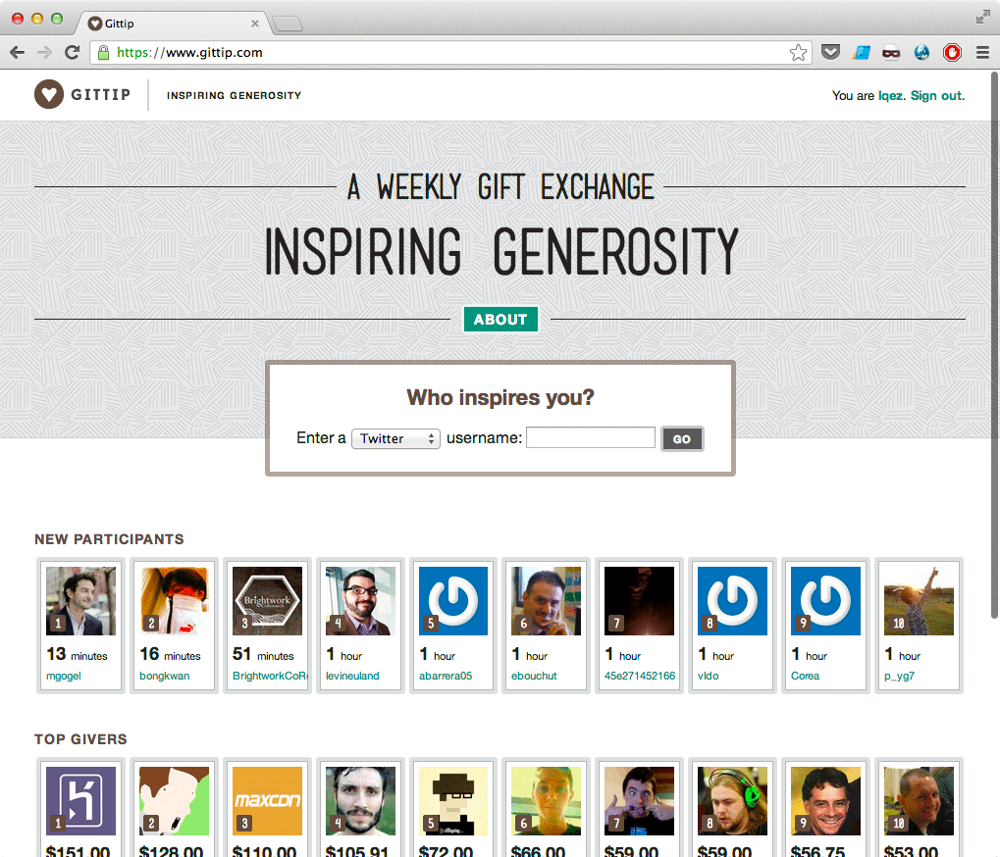

얼마 전, Schema Migrations for Django 라는 오픈소스 프로젝트 계획에 대한 모금 활동이 킥스타터에서 큰 성공을 거뒀다. 이제까지 오픈소스를 사용하면서 개발한 이들에게 고마움을 표시하는 방법은 해당 프로젝트를 열심히 사용하며, 버그 제보, 번역, 기능 추가 또는 사용기 발표 정도 밖에 없다고 생각했는데, '금전적인' 후원도 가능하다는 것을 알게 되었다.
Gittip

read more얼마 전, Schema Migrations for Django 라는 오픈소스 프로젝트 계획에 대한 모금 활동이 킥스타터에서 큰 성공을 거뒀다. 이제까지 오픈소스를 사용하면서 개발한 이들에게 고마움을 표시하는 방법은 해당 프로젝트를 열심히 사용하며, 버그 제보, 번역, 기능 추가 또는 사용기 발표 정도 밖에 없다고 생각했는데, '금전적인' 후원도 가능하다는 것을 알게 되었다.

read more@drypot 님이 의지를 불태워 http://rapixel.com 을 만들고 있는 것에 감명받아, 예전부터 만들고 싶었던 사진 저장/공유 사이트 아이디어를 구체화 해보았다.
2012년 4월, 모 게임회사의 개발자 컨퍼런스가 열린다는 소식을 듣고, 기쁜 마음에 해당 컨퍼런스의 홈페이지에 접속했다. 대형 포털 업체의 블로그 시스템을 이용한 페이지라 조금 실망했지만, 보통 이런 행사에 인력을 충분히 할당할 수 없음을 알기에 이해했다.
하지만, 일정표를 거대한 이미지 파일 하나로 배포하는 것을 보고, 아쉬운 마음을 감출 수 없었다. 개발자 ...
read moreGoogle은 - 친절하게도 - Google Apps 계정을 외부 서버와 동기화할 수 있는 기능을 제공할 뿐 아니라, 이를 위한 도구도 배포하고 있다.
스마트스터디는 사내 계정을 이미 LDAP으로 통합 운용중이라서, Google Apps Directory Sync(이하 GADS)를 선택하였다.
read moreMac OS X에 기본 설치된 vim은 다른 언어를 위한 지원 옵션 없이 빌드되어, python-mode 등을 사용할 수 없다.
다행히도, Homebrew에 포함된 vim.rb는 언어 지원을 위한 옵션을 포함하고 있어, 이를 이용해 편리하게 설치가 가능하다. 아래 명령으로 지원하는 옵션을 확인할 수 있다.
$ brew options vim
Python 지원을 포함하려면 아래와 같이 ...
read more